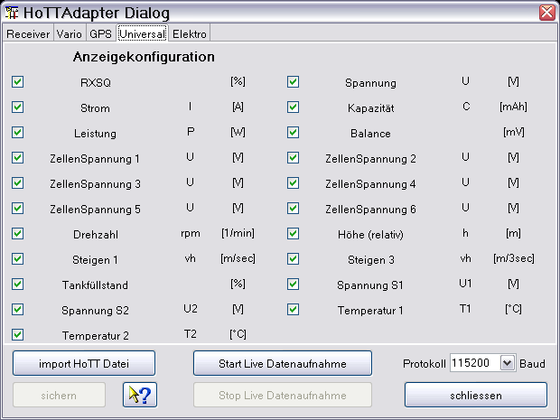

Der gezeigte Gerätedialog dient zur Konfiguration der Anzeige der ausgelesenen Daten. Über einen Dateiauswahldialog, erreichbar über "import HoTT Datei", können auch neue Dateien eingelesen werden. Start/Stop live Datenaufnahme über den konfigurierten seriellen Port. Die Auswahl der Übertragungsgeschwindigkeit legt auch das verwendete Protokoll fest. 115200 Baud für die mx-12(#33112), mx-16(#33116), mx-20(#33124), mc-32(#33032), 19200 Baud für mx-12(#4754), mx-16(#4755), mc-19,22,24(#33300 Modul, #33301 Modul, #33302 Modul). Das 19200 Baud Protokoll unterstützt alte (legacy), sowie neue Firmware. Die neue Firmware startet mit der Smart-Box Versíon 4.0.

Hinweis: Kurven, die lediglich Nullen als Daten enthalten werden automatisch ausgeblendet. Durch doppelte Selektion einer nicht sichtbaren Kurve kann man diese Kurve trotzdem sichtbar schalten!
Tipp: Da der HoTTAdapter GPS Daten anzeigt und verarbeitet, können diese auch als Google Earth Dateien (KMZ) exportiert, bzw. direkt angezeigt werden. Nähere Beschreibung dazu siehe Toolbar -> Google Earth. Mit dem HoTTAdapter2 werden alle empfangenen Messwerte auf einer Zeitachse dargestellt. Es gibt verschiedene Anwenderkonfigurationen, mit unterschiedlichen statistischen Auswertungen der evtl. vorhandenen Motorlaufzeit und dadurch entstehender Kapazitätsverbrauch.